Building medical computer vision pipelines, real-time healthcare telemetry applications, and distributed software architectures. Transforming data intelligence into robust production software.
$ cat bio.txt
Hi, I'm Ratik Rauniyar. I design and build machine learning systems, deep learning architectures, and scalable full-stack applications that solve real operational friction.
My work spans Medical Computer Vision (lesion-aware mammography detection on clinical datasets), Healthcare Management Ecosystems (real-time queueing, cross-platform mobile, payment gateways), and Distributed Web Platforms.
Convolutional networks for mammography cancer lesion localization, telemetry anomaly detection, and recommendation systems.
Cross-platform Flutter systems, real-time WebRTC audio/video consultations, and synchronized multi-role hospital dashboards.
Full-stack web applications with TypeScript, edge APIs, distributed SQLite (Turso), and fluid animation systems.
VERIFIED REPOSITORIES & ARCHITECTURES DEPLOYED ON GITHUB.
Cross-platform clinical management and patient queueing ecosystem. Integrates real-time patient status telemetry, multi-gateway payments (eSewa & Khalti), Supabase edge functions, AI clinical assistants, and WebRTC video consultations.
Full-stack Next.js web application engineered with café minimalism aesthetics. Features distributed Turso libSQL edge database handling, fluid Framer Motion micro-interactions, restaurant partner intake pipelines, and responsive layout architecture.
Lesion-aware mammography cancer detection model trained on the clinical INBreast dataset. Implements deep neural network architectures for precise region localization, artifact filtering, and mammographic density classification.
Telemetry-driven machine learning pipeline forecasting industrial equipment failure, temperature and pressure anomalies, and calculating remaining useful life (RUL) to prevent system downtime.


Always interested in building machine learning architectures, healthcare applications, or discussing technical collaborations.